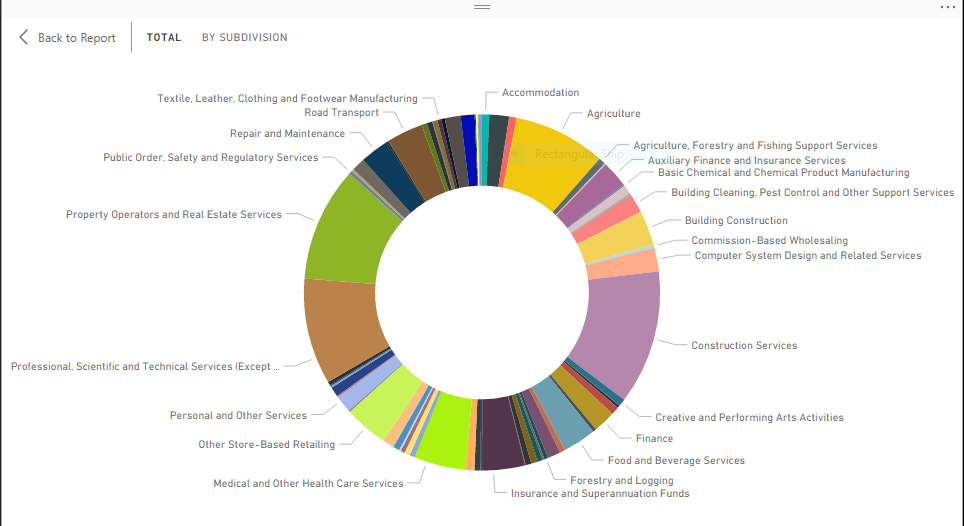

AUS - Business Investments 2M > (Year 2016)
Donut chart represents total business investments across the Australia by state for year 2016.
NSW and Victoria played major role large scale business.

AUS - Business Investments 50K -200K (Year 2016)
Donut chart represents total business investments across the Australia by state for year 2016.
NSW and Victoria played major role small business.

AUS - Business Investments 200K -2M (Year 2016)
Donut chart represents total business investments across the Australia by state for year 2016.
NSW and Victoria played major role medium scale business.

Adelaide demographics bar diagram.
This diagram illustrates demographics of the Adelaide council. This helps for the business to target age group and improve business model.

AUS - Investments in Industry Category (2016)
Donut chart represents the share of each industry type by investments.
Construction, Real estate and Technical services played major role in total investments.

Success and failure ratio by Industry (2016)
This is the Analysis on success and failure ratio by industries in year 2016. According to the data Cultural/ Recreational and personal/other industries are having high success rate.

Revenue Invested State-wide
The bar graph shows the amount of revenue invested in each state of Australia, and New South Wales and Victoria are the states where lot of investments are seen.

Exit Reason Ratio
This bar graph illustrates most frequent failure reasons. Most of the business failed and closed due to personal reasons.

Exit Reason Ratio
This bar graph illustrates most frequent failure reasons. Most of the business failed and closed due to personal reasons.